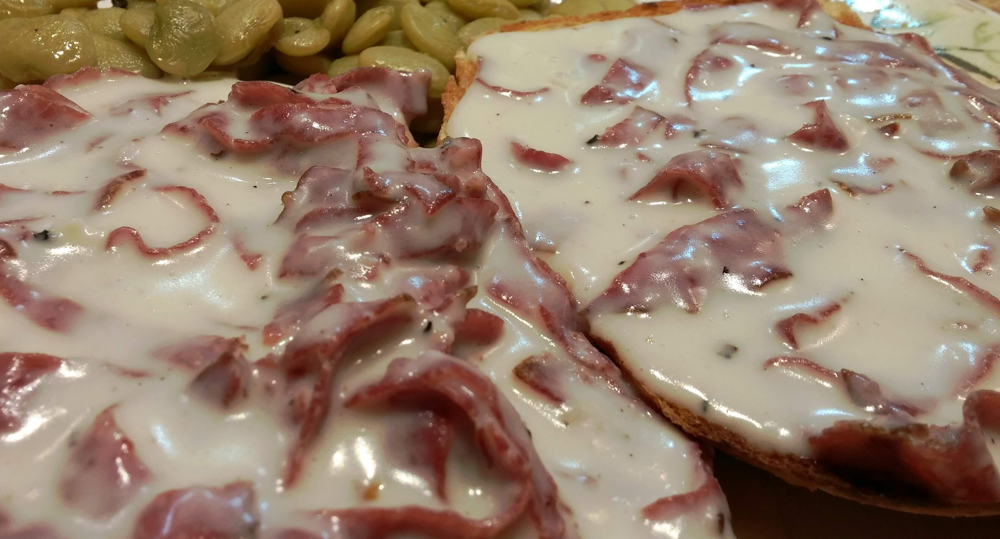

Chipped Beef on Toast

Description
A simple and relatively cheap meal consiting of dried beef in a white sauce with peas served over toast.
Ingredients
- Butter, 1 stick
- Milk
- Dried Beef, 1 jar
- Frozen Peas, about 1 cup
- Sliced Bread
- Wondraflour
Steps
- Prepare the dried beef by filling the jar with hot tap water, then dumping the water out and refilling it. Allow the beef to soak for about 15 minutes. Dump the water out, then fill the jar and dump the water out once more.
- Remove the beef from the jar and dry it with a clean cloth or paper towels.
- Cut the beef into approximatley bite sized pieces, between a half inch and an inch on each side. Seperate the slices somewhat as you go.
- Melt the stick of butter in a frying pan on medium heat.
- Place the sliced beef in the butter, and stir as it cooks, further seperating the slices of beef from each other.
- When the individual pieces of beef start to curl and have changed to a darker shade of red, sprinkle in wondraflour. Cover the beef, and stir. If each slice is not coated, or their is still butter left over, sprinkle in more wondraflour. Continue to stir until the flour butter mix starts to brown.
- Add milk until the level of the mikl is at least a quarter inch above the top of the beef. Continue stiring.
- When the milk boils, add the frozen peas.
- When the milk returns to a boil, turn down the heat, and allow to simmer, stiring occainsionally, until the sauce thickens.
- While the sauce is thickening, start toasting the bread. Toast at least two slices per person being served, more can be toasted later for seconds if desired.
- Remove pan from heat, and allow to cool approximately five minutes before placing two slices of toast on each plate and spooning the mixture from pan over the toast.